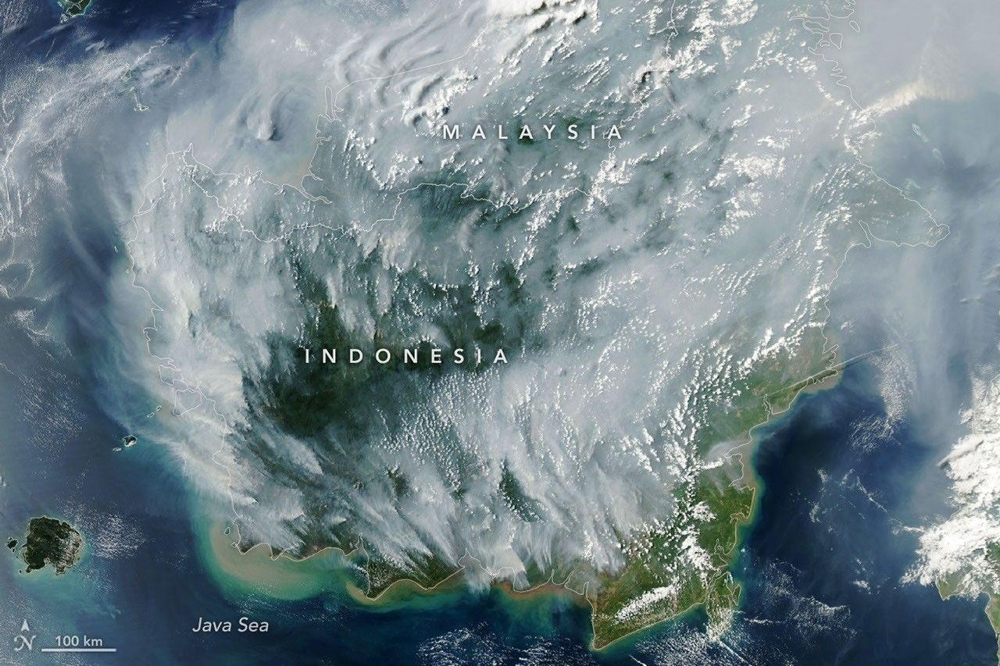
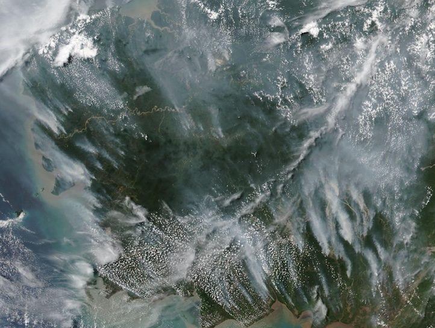

Level 3
东盟区域警戒的最高级别
8 月 26 日由东盟跨境烟霾污染控制协调中心（ACC THPC）启动ANTARA
展开说明
启动后，各成员国每天都要提交态势报告和烟羽轨迹图ANTARA。另有报道写的启动日期是 8 月 27 日SE Asia Desk。
截至 10 月 9 日，这一季烟霾已经持续了 70 天，分成两波：第一波是 8 月 1 日到 16 日，第二波从 8 月 18 日开始，到现在还没结束Wikipedia。
启动后，各成员国每天都要提交态势报告和烟羽轨迹图ANTARA。另有报道写的启动日期是 8 月 27 日SE Asia Desk。
其中小学 509 所、学生 107,590 名，中学 82 所、学生 89,733 名Wikipedia。10 月 9 日，马来半岛的吉隆坡、布城、雪兰莪、森美兰、马六甲和柔佛也宣布停课Outlook India。
这是研究机构的估算，不是官方逐一统计的死亡人数。数字转引自 Wikipedia，CREA 原报告的链接还没有找到Wikipedia。
先看卫星：9 月初，加里曼丹几乎整个被烟盖住。再看各地记者拍下的城市。


烟霾中的滨海湾街道赛道第 13 弯（Esplanade Drive），F1 新加坡大奖赛当天开始封路。
在 The Star 看原图 ↗ 印尼 西加里曼丹 · 坤甸林火的浓烟笼罩坤甸市区。
在 The Star 看原图 ↗ 马来西亚 砂拉越 · 西连（Serian）航拍：浓重的烟霾笼罩古晋省的西连镇。
在 Jakarta Post 看原图 ↗ 菲律宾 大马尼拉 · 奎松市无人机拍摄：加里曼丹林火的烟让大马尼拉笼罩在浓霾中。
在 Philstar 看原图 ↗ 菲律宾 大马尼拉 · 奎松市烟霾笼罩奎松市的天空。
在 Daily Tribune 看原图 ↗实拍照片的版权属于各通讯社和报社，本页不转载，点卡片到原网页看照片。图片说明是对原文图注的翻译。卫星图来自 NASA：NASA 的内容在美国一般不受版权保护，可用于教育和资讯用途，须注明来源NASA。
火主要烧在印尼的六个省：苏门答腊的廖内、占碑、南苏门答腊，加里曼丹的西加、中加、南加Mongabay。 拖动下面的日期，看烟霾一天天扩散到哪些地方；点地图上的地点，可以看那里发生了什么。
已受影响的地点 截至所选日期还没有记录 火区（闪烁的点） ↗ 西南季风，风向示意
这是示意图：海岸线经过简化，烟雾的范围和浓淡只表示大致方向，不是实测数据。各国用的空气质量指数不同（新加坡、文莱用 PSI，马来西亚用 API，印尼用 ISPU），数字不能直接相互比较。
印尼气象局（BMKG）的说法是：强厄尔尼诺让大部分地区干旱，但火要烧起来，仍然需要人去点ABC。天气把柴晒干，人划了火柴，季风再把烟送出国境。
今年的烟霾季同时赶上超强厄尔尼诺和正印度洋偶极子（IOD）Wikipedia。超强厄尔尼诺在 6 月正式到来，印尼越来越干Mongabay。
美国气候预测中心估计，10 月到 12 月厄尔尼诺达到「非常强」的概率是 81%Mongabay。
重点省份都有大片泥炭地，旱季容易起火Mongabay。泥炭一旦被排水变干，就可能在地下燃烧The Vibes。
环保组织 Pantau Gambut 7 月的研究发现，被观察的堵渠坝有 70% 已经损坏，52% 的干预点地下水位仍低于安全阈值The Vibes。
在南加里曼丹，不用火清理土地比直接烧要贵得多；世界银行的研究也发现，烧的每公顷成本低于人工、半机械和机械清地The Vibes。
今年印尼已有 162 名纵火嫌疑人Wikipedia。
西南季风从 5 月 14 日开始，预计 9 月结束，这段时间盛行西南风Bernama。东盟气象中心（ASMC）报告，西加里曼丹的中到浓烟霾正向北飘进砂拉越西部Bernama。
印尼国家抗灾署（BNPB）今年的预算是 4,910 亿印尼盾（约 2,750 万美元），为 15 年来最低，2025 年是 2.01 万亿印尼盾（约 1.13 亿美元）Mongabay。烟霾重灾区廖内今年的防火预算只有 36.7 亿印尼盾（约 20.55 万美元）Mongabay。
泥炭地恢复机构（今名 BRGM）的临时授权已在 2024 年到期；吊销企业经营许可这种最重的处罚，历来很少使用The Vibes。
印尼 2016 年第 57 号政府条例（PP 57/2016）第 23 条：地下水位低于泥炭表面 0.4 米，这片泥炭地即视为受损；而金合欢和油棕种植需要 0.6–0.8 米的水位Christiawan 2017。泥炭排干后会在地下燃烧The Vibes。图中火星和烟的多少只是示意。
烟霾几乎每年旱季都会来，但只有几年烧成了"大霾"。下面把能找到可靠数字的年份放在一起比较；找不到出处的年份留空，不做估计。点柱子看每一年的情况。
1997 年的面积来自联合国的报道（被毁森林面积），2015 年起是印尼官方监测系统 SiPongi 的全年过火面积，统计口径不同，只适合比较量级。2026 年只统计到 7 月，霾季还没有结束。损失都只算印尼一国，不含邻国的损失。
每一场大霾之后都会多出一份文件。协定、法律、禁令一条条加上去，烟霾还是会回来。
1997 年大霾之后，首届东盟烟霾部长会议在新加坡通过行动计划，内容是防火、监测和提升灭火能力，但没有法律约束力NUS CIL。
东盟环境部长在吉隆坡签署协定UN News。
泰国交存第六份批准书后，协定于 2003 年 11 月 25 日生效ASEAN。
造成或助长跨境烟霾污染的企业，最高可罚 200 万新元Eco-Business。
印尼国会批准协定，距签署已过去 12 年，印尼是最后一个批准的东盟成员国Jakarta Post。
2015 年大火之后成立，目标是恢复 200 万公顷退化泥炭地World Bank。
佐科总统签署总统指示，把原始林和泥炭地的新许可禁令改为永久，覆盖约 6,600 万公顷WEF。
印尼批准设立东盟跨境烟霾污染控制协调中心（ACC THPC）的协定，东盟正式确定中心设在印尼ANTARA。
BRG 后来改为泥炭地与红树林恢复署（BRGM），其临时授权在 2024 年到期The Vibes。
官员表示，要等各方都批准后中心才能全面运作ANTARA。
8 月 26 日启动最高级别区域警戒，成员国须每天提交态势报告和烟羽轨迹图ANTARA。
灭火和停课只能应付眼前，烟霾会不会每年回来，取决于泥炭地、执法和钱。下面分三层：各国政府正在做的、需要长期做的，以及你自己可以做的。
霾季期间各国正在做的事。
印尼投入约 48,000 人和 35 架飞机，用于监测、洒水和人工增雨Mongabay。日本派出 JS Kunisaki 舰和 3 架 CH-47 直升机支援Wikipedia。
砂拉越批准了三天的人工增雨，由 C-130 运输机播撒盐溶液Wikipedia。
8 月 20 日砂拉越 591 所学校全部关闭Wikipedia；10 月 9 日吉隆坡、布城、雪兰莪、森美兰、马六甲和柔佛停课Outlook India。
烟霾工作组由 28 个机构组成，1994 年 9 月成立。所有中小学教室都配了空气净化器；PSI 进入「非常不健康」（超过 200）时，各社区中心的空调房会开放NEA。
截至 9 月 17 日，印尼有 162 名纵火嫌疑人、219 起刑事调查、95 家公司受到调查Wikipedia。
不解决这些，明年的旱季还会再来一次。
按印尼法规，泥炭地地下水位要保持在地表以下 40 cm 以内Christiawan 2017。但 Pantau Gambut 7 月的调查发现，被观察的堵渠坝有 70% 已经损坏，52% 的干预点水位仍低于安全阈值The Vibes：建了坝还要有人维护。
在南加里曼丹，不用火清地比烧要贵得多The Vibes。只要这笔账不变，禁令就很难真正落实。
吊销经营许可这种最重的处罚历来很少使用；同时，特许经营区里有火点，本身并不能证明是企业放的火或要负法律责任The Vibes。新加坡 2014 年的法律允许对造成跨境烟霾的企业最高罚款 200 万新元Eco-Business。
印尼国家抗灾署今年的预算是 15 年来最低Mongabay。林业部长 8 月 6 日表示，预算不够就应该增加Mongabay。
负责泥炭地恢复的 BRGM 临时授权在 2024 年到期The Vibes。
东盟烟霾协调中心 2026 年 4 月才在雅加达启用办公室，要等各方都批准后才能全面运作ANTARA。
以下以新加坡国家环境局（NEA）的建议为准；其他国家请看当地的官方指引。
安排眼前的活动看 1 小时 PM2.5，提前计划看 24 小时 PSI 预报NEA。官方渠道有 haze.gov.sg、NEA 和新加坡气象局网站、myENV 应用NEA。本页首屏的实时读数来自 data.gov.sgdata.gov.sg。
PSI「不健康」时：健康人士减少长时间或剧烈的户外运动；老人、孕妇和儿童尽量减少；慢性心肺病患者避免NEA。各等级的完整建议见首屏面板。
短时间外出或待在室内不需要戴。预报 PSI 进入「危险」（超过 300）时，必须在户外待好几个小时的健康人可以戴 N95NEA。
PSI 达到「不健康」时，减少繁重工作和体弱员工的户外工作，并提供防护用品NEA。
烟霾变化很快，请以官方最新数据为准haze.gov.sg。
正文里每个数字后面都有对应的来源链接，这里只做汇总。资料截至 2026 年 10 月 9 日；首屏的实时读数除外。